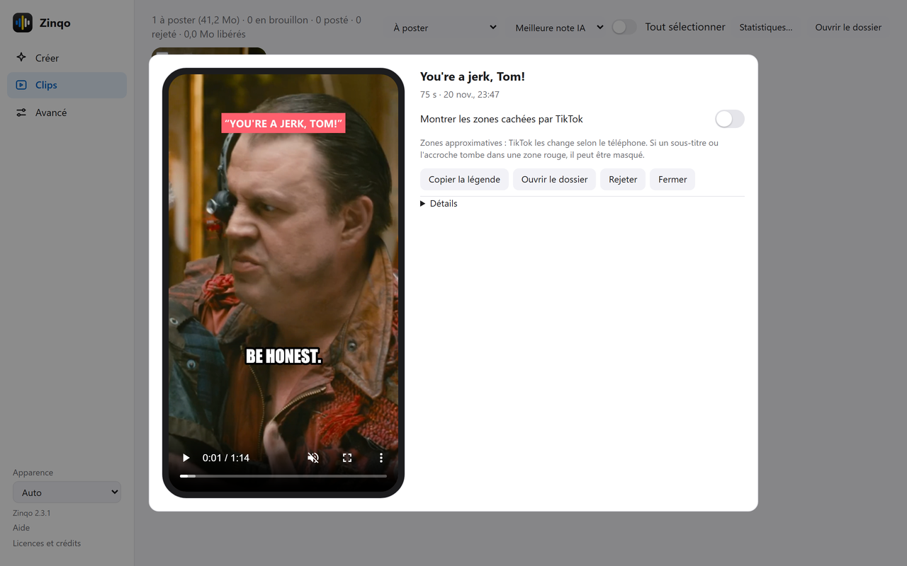
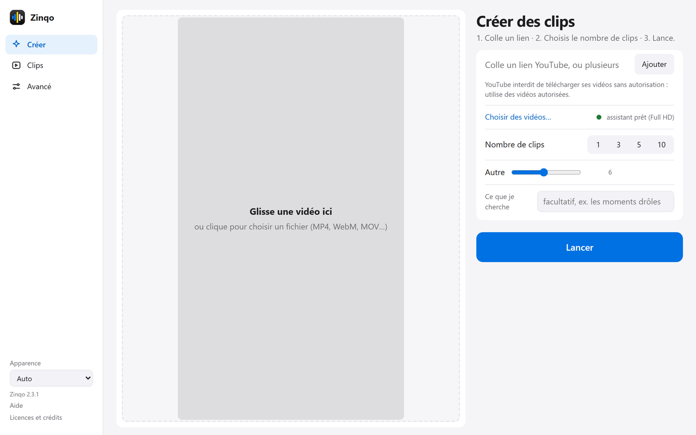
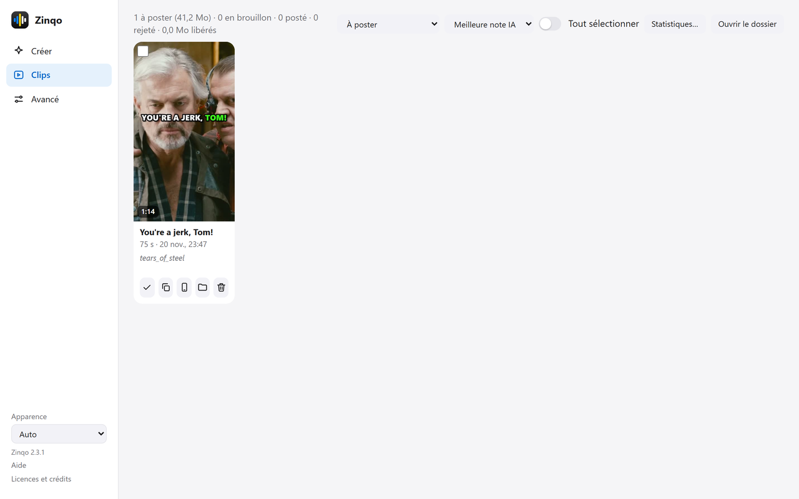

Zinqo pour Windows
Une longue vidéo.
Des clips prêts à poster.
Zinqo trouve les meilleurs moments, les recadre en vertical et les sous-titre mot à mot. Gratuit.

Colle. Lance. Poste.
Colle
Un lien ou une vidéo de ton PC. Ajoute-en plusieurs : elles attendent dans la file. Rien ne démarre avant ton clic.
Lance
Zinqo écoute, choisit, découpe, recadre en 9:16 et sous-titre. Ton PC reste utilisable pendant ce temps.
Poste
Les clips arrivent dans ton dossier Vidéos, avec un titre et une légende à copier. Tu publies toi-même.


Ne clippe que des vidéos dont tu as les droits, et cite la source. Tu restes responsable de ce que tu publies. Zinqo ne promet ni vues, ni abonnés, ni revenus.
Sous-titres
Chaque mot, au rythme de la voix.
Les mots s'affichent quand ils sont dits, les mots forts en couleur. Une accroche tirée de la vidéo ouvre le clip dès la première seconde. Chaque clip dure 65 à 75 secondes.
Vrai clip Zinqo, extrait modifié de Tears of Steel, (CC) Blender Foundation, CC-BY 3.0.
Choix des moments
Il sait où couper.
Zinqo repère les rires, les cris et les applaudissements, et le cadre suit la personne qui parle. Avec ta clé Gemini, gratuite et facultative, l'IA note chaque moment et dit pourquoi.
L'envoi en brouillon vers TikTok est expérimental et n'est pas ouvert aux autres utilisateurs.
Tout reste sur ton PC.
Pas de compte, pas de serveur, pas de publicité, pas de statistiques d'usage. L'éditeur ne reçoit ni tes vidéos, ni tes clés, ni tes données. Confidentialité
Mises à jour automatiques
Au démarrage, signature vérifiée, retour arrière si quelque chose échoue. Tes réglages et tes clips ne bougent pas.
Mode jeu
Zinqo se met en pause pendant ta partie et reprend tout seul quand tu quittes le jeu.
Depuis ton iPhone
Tes clips arrivent dans un dossier synchronisé (iCloud Drive, OneDrive, Google Drive), ou par QR code sur ton Wi-Fi : un lien secret, valable 15 minutes.
Tes cookies restent à toi
Lus seulement si tu actives l'option, sur ton PC. Jamais enregistrés ni envoyés à l'éditeur.
Configuration.
- Système
- Windows 11, ou Windows 10 (version 1803 ou plus récente) en 64 bits
- Affichage
- Composant Microsoft WebView2 (déjà présent sur Windows 11 ; sur certains Windows 10, à installer ici)
- Mémoire
- 8 Go conseillés (estimation : testé surtout sur 31 Go)
- Carte graphique
- NVIDIA recommandée (sous-titres rapides). Sans NVIDIA (AMD, Intel ou aucune) : tout marche, en mode compatible, plus lent (compte environ 5 à 6 minutes de sous-titres pour 20 minutes de vidéo)
- Place disque
- Avec carte NVIDIA : environ 4 Go une fois installé (prévois 7 Go libres pendant l'installation). Sans NVIDIA : environ 1,2 Go (prévois 3 Go libres). Tailles calculées sur les fichiers réels, à confirmer sur la page de l'installeur
- Internet
- Pour télécharger les vidéos et les composants à l'installation
- Droits
- Aucun droit administrateur requis
Un avertissement Windows ?
C'est normal. Zinqo est fait par une seule personne et n'est pas encore signé numériquement : la protection SmartScreen ne le connaît pas, c'est tout.
- Dans la fenêtre bleue « Windows a protégé votre ordinateur », clique sur Informations complémentaires.
- Vérifie que le fichier s'appelle Zinqo-Setup-…exe, puis clique sur Exécuter quand même.
- Suis l'installeur. Cet écran n'apparaît qu'au premier lancement.
Télécharge Zinqo seulement ici ou sur la page des versions officielle. Si ton antivirus réagit, ne le désactive pas : écris-moi (contact en bas de page).
Questions.
C'est vraiment gratuit ?
Oui, sans publicité ni abonnement. Zinqo est « tous droits réservés » : tu l'utilises librement, mais tu ne le revends, ne le modifies ni ne le redistribues. Le code n'est pas publié. Voir la [licence](licence.html).
Au premier lancement, ça télécharge des fichiers. Pourquoi ?
Les gros composants (voix Whisper pour les sous-titres, outils vidéo, accélération carte NVIDIA) sont téléchargés une seule fois pour que le logiciel reste léger. Compte quelques minutes (plusieurs Go avec une carte NVIDIA). Si la connexion coupe, relance : ça reprend là où c'était.
Je n'ai pas de carte NVIDIA, ça marche ?
Oui. Les sous-titres se font avec un modèle plus petit sur le processeur : c'est plus lent et un peu moins précis. Rien d'autre ne change.
Gemini, c'est quoi ? Il me faut une clé ?
Gemini est l'IA de Google qui juge si un moment est vraiment drôle ou intéressant. Elle est facultative : sans clé, Zinqo choisit les moments avec le son, l'image et le texte. La clé est gratuite (Avancé > IA Gemini) et reste chiffrée sur ton PC.
Puis-je clipper n'importe quelle chaîne ?
Non : ne clippe que les chaînes qui t'y autorisent. Un clip d'un autre créateur n'est pas toujours éligible à la rémunération TikTok. Il n'y a aucune promesse d'abonnés ni de revenus.
Où sont mes clips ? Comment les envoyer sur TikTok ?
Bouton Ouvrir le dossier sous chaque clip. Le fichier .txt à côté contient le titre et la description à copier. Le bouton noir « Envoyer sur TikTok » envoie le clip en brouillon (si ton compte est connecté).
Rien ne démarre quand je colle un lien.
C'est normal : coller ajoute le lien à la « File d'attente ». Clique Lancer.
Windows affiche « Windows a protégé votre ordinateur » ou « éditeur inconnu ».
C'est normal pour un logiciel qui n'est pas (encore) signé par un éditeur reconnu par Microsoft : ça ne veut pas dire qu'il est dangereux. Clique sur Informations complémentaires, puis sur Exécuter quand même. Ça ne s'affiche qu'au premier lancement de l'installeur. Télécharge toujours Zinqo depuis l'adresse officielle donnée par la personne qui te l'a fourni.
Comment mettre à jour Zinqo ?
Une bannière te prévient quand une nouvelle version existe. Clique Mettre à jour : tes réglages et tes clips ne sont pas touchés.
Hors connexion, Zinqo s'ouvre quand même et écrit « Hors ligne : mises à jour non vérifiées » sous la version. Sans vérification réussie depuis plus de 14 jours, un bandeau te le dit : reconnecte-toi ou télécharge la dernière version sur le site (https://dxtr-codex.github.io/zinqo/).
Qui fait Zinqo ?
Rafael Vallais. Zinqo s'appelait Clip Maker avant la version 2.3.0 : tes anciens réglages sont repris automatiquement. Zinqo n'est affilié ni à TikTok, ni à YouTube, ni à Google, ni à NVIDIA, ni à OpenAI.
Autre chose ? Voir l'aide.